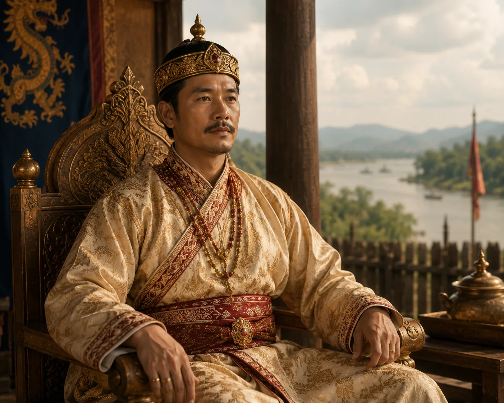

Peaceful Reign of Sujanphaa
1407–1422 · The coming of Sukaphaa

Sujanphaa preserves external peace and internal order across Upper Assam for fifteen unbroken years.
Sources have not yet been catalogued for this record.
People: Sujangphaa
Open this scene in the interactive archive · Follow this event on MAP